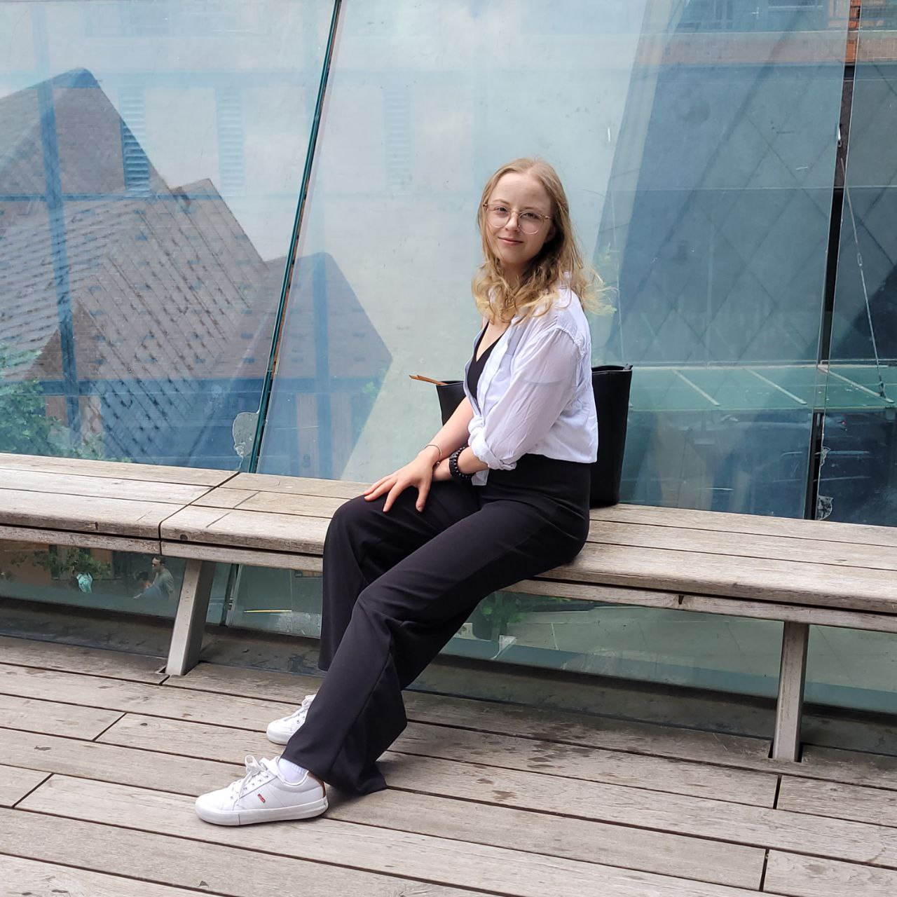

Computer Science student at Farmingdale State College
Olena Fedochynska
I build desktop and web software in Java, Python, and React, and I'm looking for a software development internship.

About
I'm a Computer Science student who likes understanding how systems work and then building something useful with that knowledge. My coursework covers data structures and algorithms, operating systems, databases, and user interface design, and I apply it in projects on GitHub.
I was born in Ukraine and continued my education in the United States after the war began, working while I studied. That experience taught me to adapt quickly, manage my time, and keep going on long projects.
I'm looking for opportunities to apply my technical skills on a real team, keep learning, and work on projects with a purpose.
Projects
-
Git Gallery
Team capstoneA web app for exploring a GitHub repository's commit history as a visual timeline, with a compare view and a way to choose which commits to capture. Built by a group for CSC325.
- Python
- Django
- React
- Vite
-
Drone Flight Calculator
A Python module that calculates drone flight time and validates its inputs. It has a 22-test pytest suite. I drafted the test skeletons with GitHub Copilot Chat, then rewrote the two that failed and confirmed that all tests pass.
- Python
- pytest
-
BMI Calculator
CSC211An interactive calculator with form inputs, radio buttons, and BMI logic for both metric (kg/m) and imperial (lb/ft) measurements. I designed the interface and handled the debugging, testing, and UI refinements.
- Java
- JavaFX
- FXML
-
Tips Calculator
An interactive calculator that handles both percentage tips and fixed amounts. It uses the same JavaFX and FXML structure as the BMI Calculator, with input handling and testing for each scenario.
- Java
- JavaFX
- FXML
-
Loan Calculator
A Java loan calculator set up as a Maven project with the Maven wrapper, so it builds the same way on any machine.
- Java
- Maven
-
GUI Basics
CSC311Coursework exercises on building desktop graphical interfaces in Java.
- Java
-
Snake Game
A browser snake game I generated with Lovable, an AI app builder, to explore AI-assisted development.
- TypeScript
- Lovable
Experience and education
-
August 2025 to present
Design and Printing Assistant
SignBoyz, Farmingdale, NY
Design signage, banners, decals, and promotional materials in Adobe Illustrator, Photoshop, and InDesign. Prepare files for print by adjusting layout, color profile, bleed, and resolution, and work with clients to turn their requirements into accurate proofs.
-
Present
B.S. in Computer Science
Farmingdale State College, Farmingdale, NY
Member of Women in Business, Support Women in Computing, and the Google Developer Group.
-
Graduated May 2025
A.A. in Liberal Arts, GPA 3.9
Nassau Community College, Garden City, NY
Dean's List and Phi Theta Kappa. Coursework included Programming I, Statistics, and Calculus I. Also worked as a student aide in the World Languages and Cultures Department.
-
2020 to 2023
Civil Engineering studies
Lviv Polytechnic National University, Ukraine
Studied structural mechanics and strength of materials before relocating to the United States. Earlier, I earned a Junior Specialist degree in Civil Engineering (equivalent to an associate degree) in 2020.
Certifications
- Google Cybersecurity Certificate
- Managing Projects in a Digital Environment
- Developing and Deploying Software in the Cloud
Skills
- Programming
- Python, Java, SQL, JavaScript (React)
- Software engineering
- Data structures and algorithms, software development life cycle, Agile, CI/CD, cloud computing, business analysis, Git and GitHub
- Design tools
- Adobe Photoshop, Illustrator, InDesign, After Effects, Premiere Pro; Figma; InVision
- Engineering software
- AutoCAD, Revit, 3ds Max, Maya, Femap
- Other tools
- Microsoft Office, Audacity; Windows and macOS
- Languages
- English, Ukrainian, Russian
Contact
I'm open to internships and entry-level software roles. The best way to reach me is by email or LinkedIn.
Download resume (PDF)